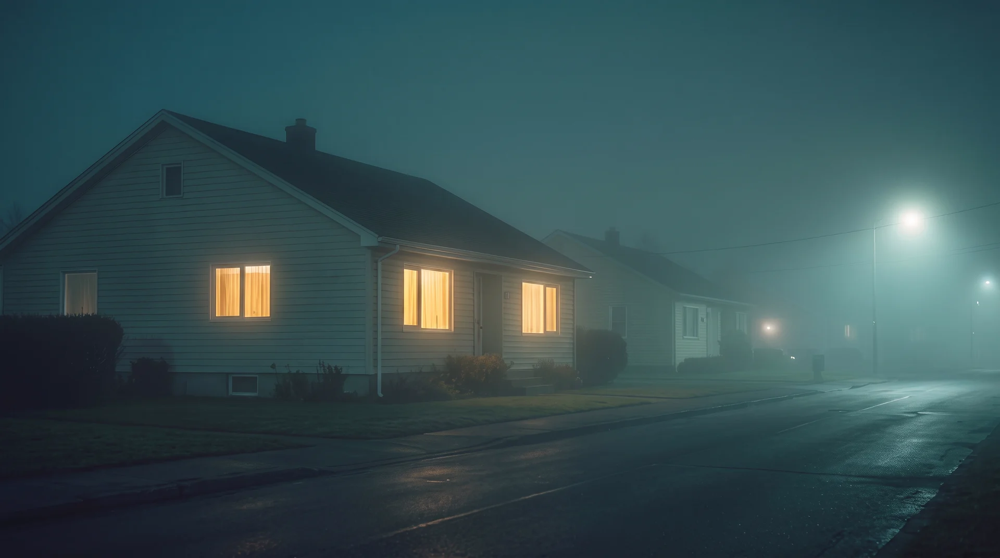

◈ Live departure board · Platforms 0 – 11
Nowhere Central
Six services leave from here tonight. None of the destinations exist. Put the sound on, let the board drift, and stay until you fall asleep — arrival was never part of the arrangement.
- Services
- 6
- Arrivals
- 0
- Platforms
- 12
- Est.
- ——
01 — Departures
Choose a service and it will take you.
Pick a row · or press 1 – 6
M sound · Q qualityTap a service to board
02 — The Station
Built for traffic that never came.

The building predates the line it serves. Surveyors found the concourse already standing, already lit, already sweeping itself, and drew the track toward it because it seemed rude not to.
Nothing here is haunted. The clocks are accurate to the second. The tea is hot and the announcements are clear. That is what unsettles people — not that the station is strange, but that it is immaculate, and nobody can say who keeps it that way.
What we can tell you is this: the board is honest. If it says a service departs at 15:04, it departs at 15:04, and it goes exactly where it says it goes. Whether that place is real is a separate question, and not one the timetable is obliged to answer.
- Platforms
- 12 Zero is not counted
- Staff
- 1 Shift undocumented
- Departures
- ∞ Since records began
- Returns
- — Unrecorded
03 — Lost & Found
Currently held at the counter.
Items are kept for thirty days, or until claimed by someone else. Please bring proof. Any proof.
The counter is open. Pick anything up.
Held for you